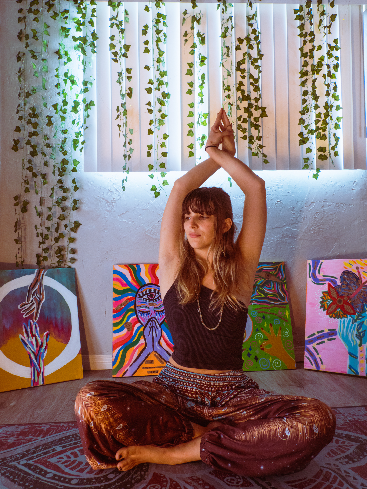
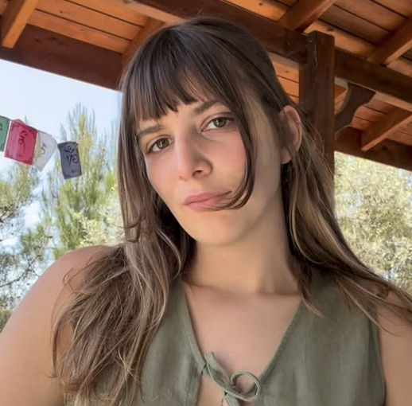

Merhaba, Ben Leyla.
Nefes, somatik farkındalık ve kronik ağrı konularında uzmanlaşan bir zihin-beden rehberiyim. Amacım, kendini iyileştirmek için ihtiyacın olan her şeyin zaten içinde olduğunu sana hatırlatmak.
Hakkımda
Kendi kronik bel ağrısı, kaygı ve panik atak iyileşme yolculuğumda kendimi iyileştirebilecek tek kişinin ben olduğunu farkettim.
Bedenimizin bizimle iletişimini dinlemeye başladığımızda hem fiziksel hem zihinsel semptomlar etkisini yavaş yavaş kaybediyor. Kalıcı özgürlük o zaman mümkün oluyor.
Bu çalışmayı, insanların bu güçle yeniden bağlantı kurmasına yardımcı olmak ve çoğu zaman bizi yüzüstü bırakan hastane, ilaç ve Batı merkezli terapi döngülerine bir alternatif oluşturmak için sunuyorum.
Kararlılık, sabır ve güvenle herkesin kendi iyileşmesinin kaynağı olabileceğine inanıyorum. Benim rolüm; nefes çalışması, somatik farkındalık ve zihin-beden yaklaşımıyla bu sürecin gerçekleşmesi için destekleyici bir alan oluşturmak.

İyileşme, bedenin doğal bilgeliğine güvenmekle başlar. Ona ihtiyaç duyduğu alanı, farkındalığı ve şefkati verdiğimizde şifa süreci kendiliğinden açılır.
Benimle Çalışmanın Yolları
Kronik Ağrılardan Özgürleşme
Kronik ağrının kökenini bastırılmış duygular ve sinir sistemi üzerinden ele alan zihin-beden çalışması. Ağrının nedenini anlamayı, sinir sistemini regüle etmeyi ve ağrı döngüsünden kalıcı olarak özgürleşmeyi destekler.
Daha fazlaNefes ve Somatik Farkındalık
Nefes, somatik farkındalık ve sinir sistemi düzenlemesini bir araya getiren kişiye özel bire bir süreç. Bedeninle güvenli temas kurmayı, duygusal dayanıklılığı ve bedenlenmiş bir özerklik hissini güçlendirir.
Daha fazlaSeanslarla ilgili bilgi almak için, leylafiratli3@gmail.com email adresinden veya iletişim formundan benimle iletişime geçebilirsin.

Yaklaşımımın Temelleri
Kendi iyileşme yolculuğumdan ve yaşadığımız dünyanın bedenlerimizi nasıl etkilediğine dair anlayışımdan doğan bu ilkeler, çalışmama rehberlik ediyor.
Sinir sistemin sağlıksız bir dünyaya tepki veriyor
Kronik ağrı, kaygı, tükenmişlik ve kopukluk; bu dünyada hayatta kalmaya çalışan bedenin yarattığı güçlü bir koruma sistemidir. Eğer bu durumları yaşıyorsan, bu çok normal ve seninle ilgili yanlış ya da kırık bir şey yok.
İyileşme dinlemek ve anlamakla başlar
Kalıcı özgürlük, sinir sistemimizin mesajını dinleyip anlamakla mümkün olur. Bedenimizin bize anlatmaya çalıştığı şeyi duyduğumuzda, semptomlara duyulan ihtiyaç azalır.
Kendini sadece sen iyileştirebilirsin
İyileşmek, bir seçimdir ve kendini iyileştirebilecek tek kişi sensin. Benim yapabiliceğim tek şey, bu yolda yanında yürümek ve sana bana iyi gelen pratikleri aktarmak. Bir süre birlikte çalıştıktan sonra artık bana ihtiyaç duymamanı amaçlıyorum.
Bireysel iyileşme toplumsal dönüşümü besler
Kişisel iyileşme aynı zamanda toplumsal bir eylemdir. Birey olarak güçlendikçe topluluk güçlenir; topluluk güçlendikçe sistemler zayıflar ve dünya değişmeye başlar. İyileşmen sadece senin için değil.
Sevgi ve empatiye dayalı
Bu çalışmaya derin bir sevgi ve empatiyle yaklaşıyorum. Mükemmel olmayan bir sistemde hepimizin elinden geleni yaptığını bilerek ilerliyoruz. Her seansta insanlığın onurlandırılır.

Bedenimizle her yeniden bağ kurduğumuzda, kopukluğumuzdan beslenen sistemler zayıflar. Bu çalışmayı, özgür ve ağrısız bedenlerimizle yaratabileceğimiz daha sağlıklı dünya düzenlerini hayal ederek paylaşıyorum.

Soruların varsa benimle iletişime geçebilirsin.
Seanslarla ilgili bilgi almak için, leylafiratli3@gmail.com email adresinden veya aşağıdaki formdan benimle iletişime geçebilirsin.
Form